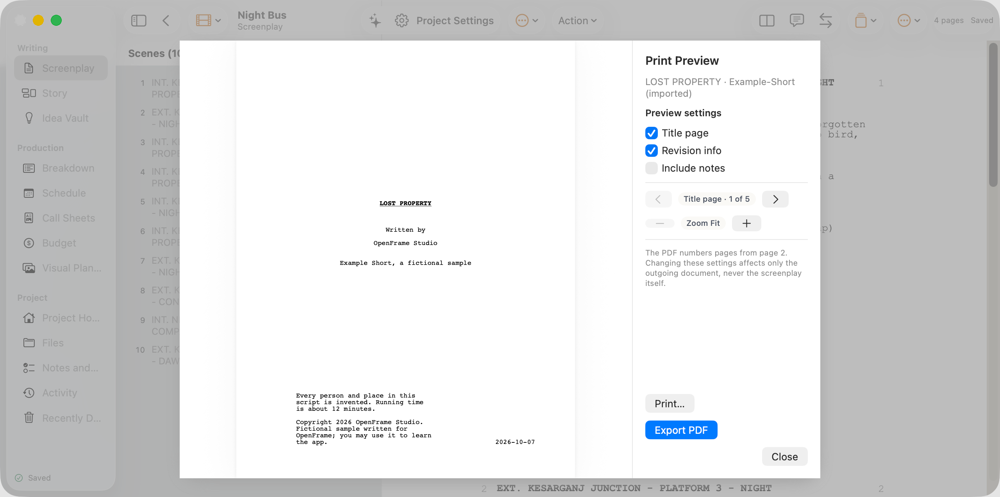

menu-file. Controls on this screen:

Writing Screenplay Story Idea Vault Production Breakdown Schedule Call Sheets Budget Visual Planning Project Project Home Files Notes and Tasks Activity Recently Deleted Saved Scenes (10) 4 pages Saved Night Bus Screenplay LOST PROPERTY Written by OpenFrame Studio Example Short, a fictional sample Every person and place in this script is invented. Running time is about 12 minutes. Copyright 2026 OpenFrame Studio. Fictional sample written for OpenFrame; you may use it to learn the app. 2026-10-07 FADE IN: A small office behind a barred window. Shelves of forgotten things: umbrellas, a single shoe, a birdcage with no bird, a box of keys labelled by year. DEVI (60s, cardigan over a railway uniform, reading glasses) eats peanuts from a paper cone and fills in a REGISTER in slow, neat capitals. A knock on the window bars. She looks up. KIRAN (12, school bag, hair wet from the washroom tap) stands on tiptoe to see over the counter. KIRAN Did anyone hand in a kite? DEVI What kind of kite? KIRAN Red. A long tail made of newspaper. It says KIRAN on the back in marker. Devi runs a finger down the register. DEVI No kites. One goat, last Tuesday. He was collected. KIRAN I will come tomorrow. He is gone before she can answer. 2 EXT. KESARGANJ JUNCTION - PLATFORM 3 - NIGHT 2 A long platform under yellow lamps. A goods train clanks past without stopping. Kiran sits on a bench with his knees pulled up, watching the sky above the station roof. 3 INT. KESARGANJ JUNCTION - LOST PROPERTY OFFICE - NIGHT 3 The next night. The same knock. Devi does not look up. DEVI No kites. KIRAN I will come tomorrow. The night after. Devi already has her finger on the register when the knock comes. DEVI (before he speaks) Still no kites. KIRAN How do you know I came for the kite? DEVI Nobody comes three nights in a row for a shoe. He almost smiles. Then he goes. Devi watches the empty window. She closes the register. 5 INT. KESARGANJ JUNCTION - STORE ROOM - NIGHT 5 A long, low room under the platforms. Cages of sacks and crates. A single TUBE LIGHT that buzzes and flickers. Devi walks along the shelves with a TORCH. She lifts tarpaulins, opens crates, moves a broken harmonium. Behind a stack of suitcases, something red. She pulls it free. A KITE, its frame snapped in two places, the paper torn. The newspaper tail is tangled around a suitcase handle. On the back, in marker: KIRAN. DEVI (to herself) You were hiding. 6 INT. KESARGANJ JUNCTION - LOST PROPERTY OFFICE - NIGHT 6 The kite lies on the counter. Devi sits with a pot of GLUE, a roll of TAPE and two thin BAMBOO STICKS cut from a broom. She splints the frame. She patches the tear with a page from the register, the blank side out. Her hands know the work. The knock. Kiran sees the kite. He grips the bars. KIRAN That is mine. DEVI I know. Your name is on it. DEVI It was broken. Now it is mended. Those are different. She slides it under the bars. He holds it as if it might break again. KIRAN My father made it. Before he went to work in the city. DEVI Then he will want to know it still flies. 7 EXT. KESARGANJ JUNCTION - FOOTBRIDGE - NIGHT 7 The footbridge over the tracks. Wind rattles the iron railings. Kiran and Devi climb the steps, Devi slower, one hand on the rail. DEVI I am not running. Do not ask me to run. KIRAN You do not have to run. You only have to hold it up. 8 EXT. KESARGANJ JUNCTION - FOOTBRIDGE - CONTINUOUS 8 Devi holds the kite high over her head. Kiran walks backwards, paying out the string from a SPOOL. KIRAN Let go! She lets go. The kite dips toward the tracks, then catches the wind and climbs. It rises over the station roof, the newspaper tail snapping behind it. Kiran laughs out loud. A night train slides beneath them, every window lit. Passengers look up. 9 INT. NIGHT TRAIN - SECOND CLASS COMPARTMENT - CONTINUOUS 9 A tired MAN (30s, work clothes, lunch tin on his lap) looks out of the window. He sees a red kite above the station. He sits up. 10 EXT. KESARGANJ JUNCTION - FOOTBRIDGE - DAWN 10 Grey light. The kite still flies. Kiran sits on the bridge floor with the string tied around his wrist, asleep against the railing. Devi sits beside him, peanuts in her lap. She takes out the REGISTER and writes in her slow, neat capitals: INSERT - THE REGISTER "ONE KITE. RED. RETURNED TO OWNER." BACK TO SCENE She closes the book and looks up at the kite. FADE OUT. Print Preview LOST PROPERTY · Example-Short (imported) Preview settings Title page · 1 of 5 Zoom Fit The PDF numbers pages from page 2. Changing these settings affects only the outgoing document, never the screenplay itself. LOST PROPERTY Written by OpenFrame Studio Example Short, a fictional sample Every person and place in this script is invented. Running time is about 12 minutes. Copyright 2026 OpenFrame Studio. Fictional sample written for OpenFrame; you may use it to learn the app. 2026-10-07 FADE IN: A small office behind a barred window. Shelves of forgotten things: umbrellas, a single shoe, a birdcage with no bird, a box of keys labelled by year. DEVI (60s, cardigan over a railway uniform, reading glasses) eats peanuts from a paper cone and fills in a REGISTER in slow, neat capitals. A knock on the window bars. She looks up. KIRAN (12, school bag, hair wet from the washroom tap) stands on tiptoe to see over the counter. KIRAN Did anyone hand in a kite? DEVI What kind of kite? KIRAN Red. A long tail made of newspaper. It says KIRAN on the back in marker. Devi runs a finger down the register. DEVI No kites. One goat, last Tuesday. He was collected. KIRAN I will come tomorrow. He is gone before she can answer. 2 EXT. KESARGANJ JUNCTION - PLATFORM 3 - NIGHT 2 A long platform under yellow lamps. A goods train clanks past without stopping. Kiran sits on a bench with his knees pulled up, watching the sky above the station roof. 3 INT. KESARGANJ JUNCTION - LOST PROPERTY OFFICE - NIGHT 3 The next night. The same knock. Devi does not look up. DEVI No kites. KIRAN I will come tomorrow. The night after. Devi already has her finger on the register when the knock comes. DEVI (before he speaks) Still no kites. KIRAN How do you know I came for the kite? DEVI Nobody comes three nights in a row for a shoe. He almost smiles. Then he goes. Devi watches the empty window. She closes the register. 5 INT. KESARGANJ JUNCTION - STORE ROOM - NIGHT 5 A long, low room under the platforms. Cages of sacks and crates. A single TUBE LIGHT that buzzes and flickers. Devi walks along the shelves with a TORCH. She lifts tarpaulins, opens crates, moves a broken harmonium. Behind a stack of suitcases, something red. She pulls it free. A KITE, its frame snapped in two places, the paper torn. The newspaper tail is tangled around a suitcase handle. On the back, in marker: KIRAN. DEVI (to herself) You were hiding. 6 INT. KESARGANJ JUNCTION - LOST PROPERTY OFFICE - NIGHT 6 The kite lies on the counter. Devi sits with a pot of GLUE, a roll of TAPE and two thin BAMBOO STICKS cut from a broom. She splints the frame. She patches the tear with a page from the register, the blank side out. Her hands know the work. The knock. Kiran sees the kite. He grips the bars. KIRAN That is mine. DEVI I know. Your name is on it. DEVI It was broken. Now it is mended. Those are different. She slides it under the bars. He holds it as if it might break again. KIRAN My father made it. Before he went to work in the city. DEVI Then he will want to know it still flies. 7 EXT. KESARGANJ JUNCTION - FOOTBRIDGE - NIGHT 7 The footbridge over the tracks. Wind rattles the iron railings. Kiran and Devi climb the steps, Devi slower, one hand on the rail. DEVI I am not running. Do not ask me to run. KIRAN You do not have to run. You only have to hold it up. 8 EXT. KESARGANJ JUNCTION - FOOTBRIDGE - CONTINUOUS 8 Devi holds the kite high over her head. Kiran walks backwards, paying out the string from a SPOOL. KIRAN Let go! She lets go. The kite dips toward the tracks, then catches the wind and climbs. It rises over the station roof, the newspaper tail snapping behind it. Kiran laughs out loud. A night train slides beneath them, every window lit. Passengers look up. 9 INT. NIGHT TRAIN - SECOND CLASS COMPARTMENT - CONTINUOUS 9 A tired MAN (30s, work clothes, lunch tin on his lap) looks out of the window. He sees a red kite above the station. He sits up. 10 EXT. KESARGANJ JUNCTION - FOOTBRIDGE - DAWN 10 Grey light. The kite still flies. Kiran sits on the bridge floor with the string tied around his wrist, asleep against the railing. Devi sits beside him, peanuts in her lap. She takes out the REGISTER and writes in her slow, neat capitals: INSERT - THE REGISTER "ONE KITE. RED. RETURNED TO OWNER." BACK TO SCENE She closes the book and looks up at the kite. FADE OUT. Print Preview LOST PROPERTY · Example-Short (imported) Preview settings Title page · 1 of 5 Zoom Fit The PDF numbers pages from page 2. Changing these settings affects only the outgoing document, never the screenplay itself.